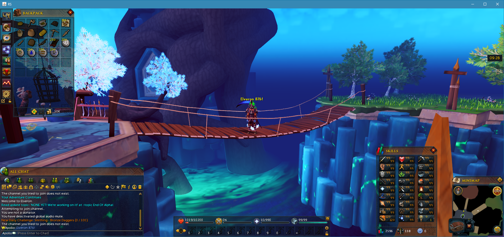
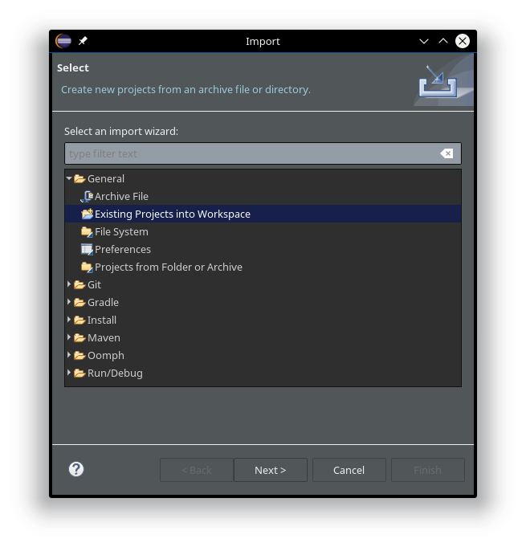
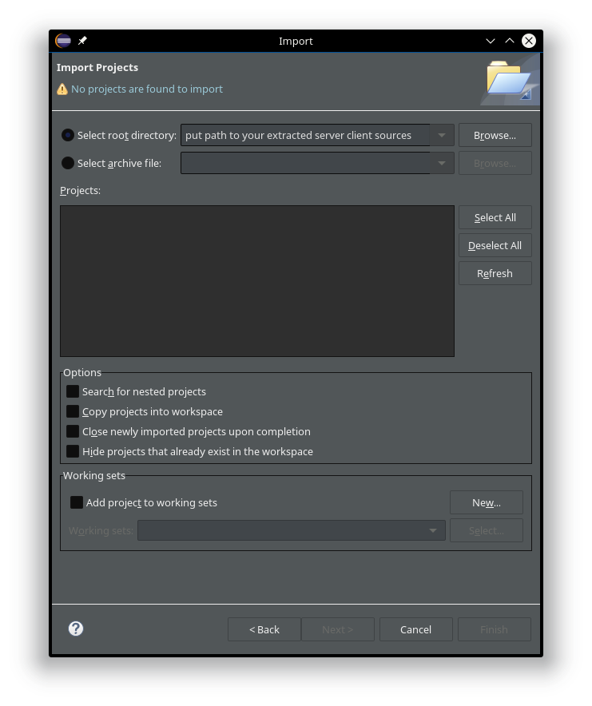
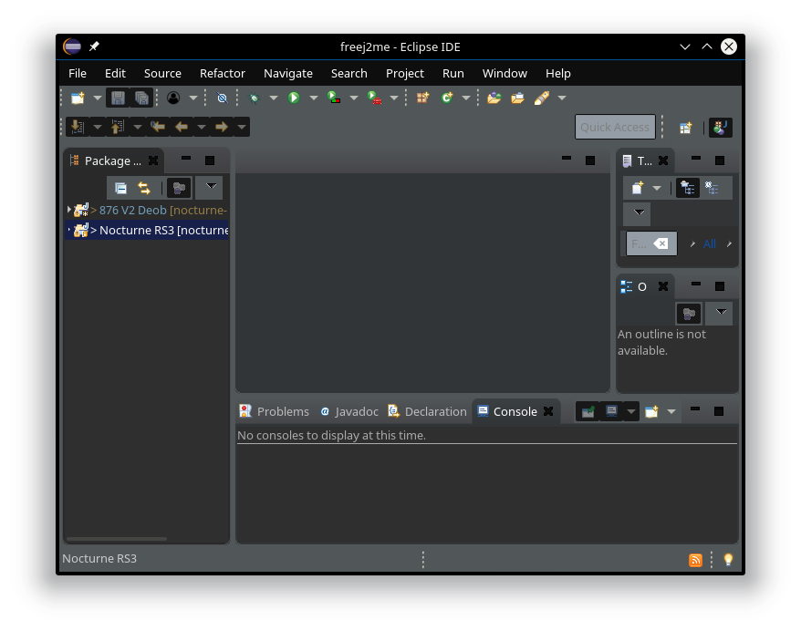
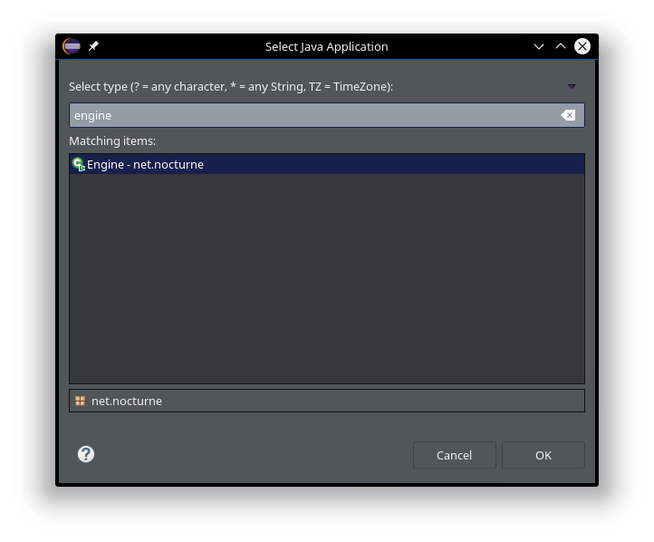
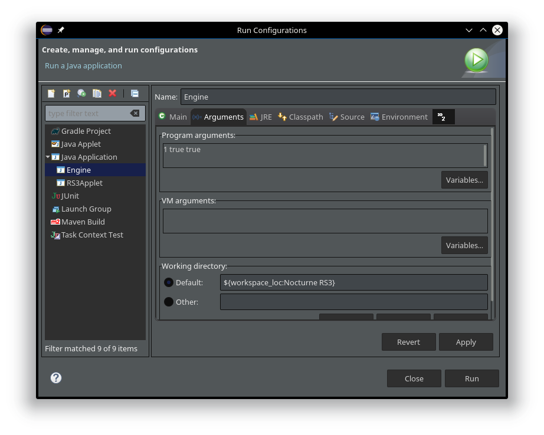

i have finaly figured out how to do this with my favourite server i used to play on before it got removed or something? latest nocturne source
its 876 revision which means its almost upto date only missing 20 updates since newest rs update is 896
i have been looking around abit and i couldnt find any quests in nocturne
benefits: spawn any item in any quantity, see source code, teleport anywhere, be admin, you can change everything
helfull links rsps wiki
steps in this tutorial will be similiar to this How To... Make Your Own "Runescape Private Server" "Matrix 718" youtube video just a bit different for 876 rsps
1. runescape is made with java so you should install oracle java
sudo add-apt-repository ppa:webupd8team/java && sudo apt-get update && sudo apt-get install oracle-java8-installer && echo -e "\n\n\033[32meverything done!"
2. install eclipse IDE for java developers
3. get server get client get 876_cache
4. extract them all into one folder
5. enter extracted 876_cache folder copy its contents into nocturne-rs3/data/cache
6. copy 876_cache into your home directory $HOME
- open server source folder nocturne-rs3/src/net/nocturne/
- open settings.java with kate text editor
edit line 34 public static final String VPS1_IP = HOSTED ? "104.155.26.178"
to public static final String VPS1_IP = HOSTED ? "127.0.0.1"
edit line 79 private static final String MASTER_IP = "73.16.240.53";
to private static final String MASTER_IP = "127.0.0.1";
edit line 179 Settings.HOSTED ? "10.132.0.2" : "127.0.0.1", 43593);
to Settings.HOSTED ? "127.0.0.1" : "127.0.0.1", 43593);
edit line 192 HOSTED ? "10.132.0.2" : "127.0.0.1", 7777);
to HOSTED ? "127.0.0.1" : "127.0.0.1", 7777);
edit line 194 HOSTED ? "10.132.0.2" : "127.0.0.1", 7778);
to HOSTED ? "127.0.0.1" : "127.0.0.1", 7778);
edit line 197 new WorldInformation(1, 0, "World1", 0, 0x2 | 0x8, "Nocturne :D", "10.132.0.2", 100),
to new WorldInformation(1, 0, "World1", 0, 0x2 | 0x8, "Nocturne :D", "127.0.0.1", 100),
- open client source folder nocturne-rs3-client/src/com/
- open RS3Applet.java with kate text editor
edit line 82 public static String HOST_ADDRESS = RSPS ? "64.94.101.104" : "world2.runescape.com";
to public static String HOST_ADDRESS = RSPS ? "127.0.0.1" : "world2.runescape.com";
7. open eclipse
- when first opening eclipse you will be greeted with Welcome screen so just close that by pressing close
- create a new workspace by pressing File menu - Switch Workspace - Other... name it nocturne 876
- close welcome screen again
- now i like to change the theming so press on the Window menu - Preferences
- in preferences window expand General then appearance choose Dark mac os x
8. press the File menu then import
9. choose general - Existing Projects into Workspace then press Next
10. put path to the folder where you extracted the server and client in step 4 then click Browse to the right make sure 876 V2 Deob and Nocturne RS3 are both selected then press finish
- you should see Building workspace in the botom right wait till its done building
11. on the left you will now see both 876 V2 Deob and Nocturne RS3
12. Nocturne RS3 is the server source and you need to rigth click it then select run as then run as java aplication
13. search for engine then press ok
-now stop the server by pressing the red terminate button or in KSysGuard search for java hover over the name if you see engine at the end of the command than end that
- right click on the (server) Nocturne RS3 - Run As - Run Configurations
- switch to Arguments tab and insert 1 true true press Apply then Run
- i found this argument in nocturne-rs3 folder - Alpha World.sh
- now hopefully the server is running fully
14. now right click the 876 V2 Deob (client) then select run as then run as java aplication
15. search for client now the client opens
16. login with username danny and any password to become super admin with every privlige
in server source folder nocturne-rs3/information/ you can find itemList.txt where all the item ids are
The best commands
::master - level 99 everything
::yell hi
::reset
::tonpc 1 - turn into man
::tonpc 19465 - turn into arax
::tonpc -1 - turn back
::emote 21177 - woodcuting animation + sound
::house - teleports to your house
::npc 1532
::tele 0,41,41,35,25
::exchange
::pestpoints
::item 10611
::item 8839
::item 31639
::istringl 4000
::sendhome cjay0091
::empty
::hide
::coords
::god
::hit 1
::spec
::item 995 51 - coins
31725 - Noxious scythe
31729 - Noxious staff
31733 - Noxious longbow
29854 - Sirenic mask
29857 - Sirenic hauberk
29860 - Sirenic chaps
28608 - Tectonic mask
28611 - Tectonic robe top
28614 - Tectonic robe bottom
30005 - Malevolent helm
30008 - Malevolent cuirass
30011 - Malevolent greaves
30014 - Malevolent kiteshield
30018 - Vengeful kiteshield
30022 - Merciless kiteshield
30906 - Pernix armour set
30904 - Virtus armour set
30901 - Torva armour set
33722 - Tirannwn quiver 4
31737 - Araxyte arrow
554 - Fire rune
555 - Water rune
556 - Air rune
557 - Earth rune
558 - Mind rune
559 - Body rune
560 - Death rune
561 - Nature rune
562 - Chaos rune
563 - Law rune
564 - Cosmic rune
565 - Blood rune
566 - Soul rune
31869 - Ring of death
31875 - Amulet of souls
31872 - Reaper necklace
33223 - Supreme overload salve (6)
23609 - Prayer renewal flask (6)
33187 - Super prayer renewal potion (6)
385 - Shark
386 - Shark noted
15272 - Rocktail
15273 - Rocktail noted
12094 - Pack yak pouch
26313 - Rocktail soup
26314 - Rocktail soup noted
26297 - Superior scrimshaw of vampyrism
26300 - Superior scrimshaw of attack
26303 - Superior scrimshaw of the elements
26306 - Superior scrimshaw of magic
26309 - Superior scrimshaw of cruelty
26312 - Superior scrimshaw of ranging
29475 - Daemonheim aura 4
31850 - Aura refresh (tier 4)
22298 - Vampyrism aura
22891 - Dark magic aura
22897 - Berserker aura
22903 - Master salvation aura
22909 - Master corruption aura
22933 - Master knock-out aura
23864 - Supreme runic accuracy aura
23866 - Supreme sharpshooter aura
23874 - Supreme corruption aura
23876 - Supreme salvation aura
23880 - Infernal gaze aura
28437 - Ascension crossbow
28441 - Off-hand Ascension crossbow
28465 - Ascension bolts
28617 - Seismic wand
28621 - Seismic singularity
26579 - Drygore rapier
26583 - Off-hand drygore rapier
26587 - Drygore longsword
26591 - Off-hand drygore longsword
26595 - Drygore mace
26599 - Off-hand drygore mace
what does this do?
::varbit 3806 1 - cyaj command
::object 4138 - turns a tile blue?
::bconfig 1
::bconfig 1 1
::bconfig 1 2
::inter 1011
::bconfigloop 0 1500 2
::inclientScriptMap.txt
::inclientScriptMap.txtinter clientScriptMap.txt
::hidec 1011 76 true
::configfloop 0 10000 3
::varloop 0 30000 4
::varbitloop 0 30000 1
::istringl 4000
::nisvar 2989 -2147344282
::shutdown 0
::tab 1466 0
::ss 1 0
::sendscriptblank 4704
::config 3708 1
::var 2934 -1275068416
::pane 1327
::object shutdown 0
::givexp dragonkk
::resetprices
::item 1477 51 false